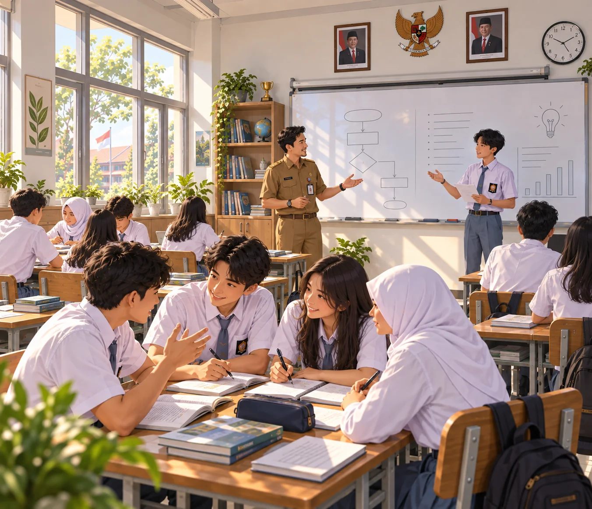
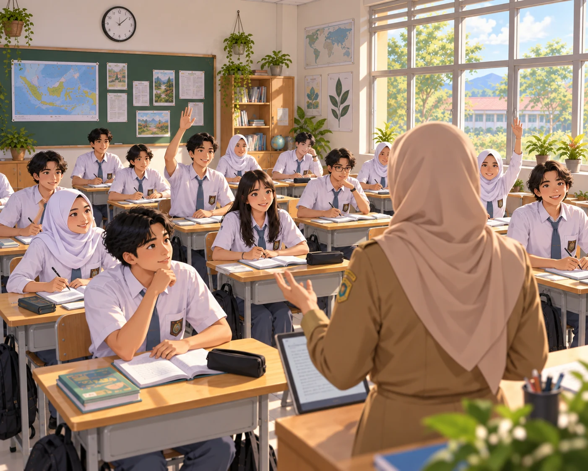
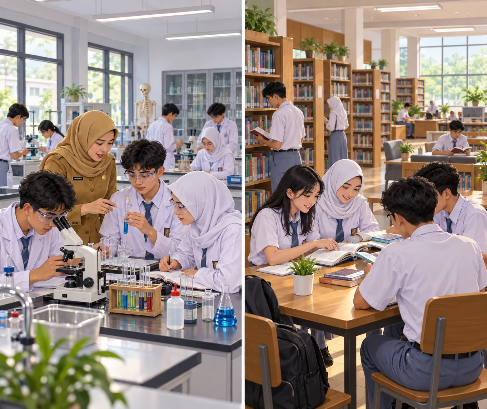

Melanjutkan PIP dari jenjang SMP
Siswa yang sejak SMP sudah terdaftar sebagai penerima PIP tetap menerima bantuannya setelah masuk SMA. Sekolah memperbarui data penerimanya setiap tahun ajaran supaya bantuannya tidak terputus.
Di SMA Negeri 1 Bati-bati, akademik yang kuat berjalan bersama pembinaan karakter dan proyek nyata lintas mata pelajaran. Setiap siswa dibimbing sejak kelas X sampai benar-benar siap melanjutkan kuliah maupun masuk dunia kerja.
Terakreditasi A Kurikulum Merdeka Program beasiswa

Enam jalur belajar: empat kelompok mata pelajaran pilihan dan dua program keterampilan. Porsi praktiknya besar, dan setiap kelas dibimbing wali kelas dengan rasio kecil — jadi tidak ada siswa yang "hilang di tengah".
PIP adalah bantuan uang tunai dari pemerintah bagi peserta didik dari keluarga miskin atau rentan miskin, supaya mereka tetap bisa bersekolah sampai tamat pendidikan menengah. Sekolah mengurus dua hal: melanjutkan bantuan bagi siswa yang sudah menerimanya sejak SMP, dan mengusulkan siswa yang belum menerima.
Siswa yang sejak SMP sudah terdaftar sebagai penerima PIP tetap menerima bantuannya setelah masuk SMA. Sekolah memperbarui data penerimanya setiap tahun ajaran supaya bantuannya tidak terputus.
Sekolah membantu mengusulkan siswa dari keluarga miskin atau rentan miskin yang belum pernah menerima PIP. Usulan dikirim lewat jalur resmi pemerintah — yang menetapkan penerimanya pemerintah pusat, dan sekolah mendampingi sampai hasilnya keluar.
Peserta didik dari keluarga miskin atau rentan miskin, terutama yang termasuk salah satu kelompok berikut:
Sampaikan keadaan keluarga Anda ke wali kelas atau datang ke kantor sekolah. Pengusulan PIP di sekolah tidak dipungut biaya apa pun, dan berkas yang perlu disiapkan akan dijelaskan langsung oleh petugas sekolah. Nama siswa yang sudah ditetapkan sebagai penerima bisa dicek sendiri di laman resmi PIP.
Keterangan di bagian ini bersumber dari laman resmi Program Indonesia Pintar, Kementerian Pendidikan Dasar dan Menengah — pip.kemendikdasmen.go.id.
16 ekstrakurikuler berjalan Senin sampai Jumat setelah jam pelajaran sekolah. Semua dibimbing pembina tetap, dan setiap siswa bebas memilih yang ingin diikuti — tanpa paksaan.
Tahun pertama dipakai untuk menyesuaikan diri dan memetakan minat. Siswa mencoba berbagai kegiatan, lalu dibimbing wali kelas menentukan mata pelajaran pilihan di akhir tahun.
Mata pelajaran pilihan berjalan penuh. Siswa mengerjakan proyek lintas mata pelajaran, mengikuti kompetisi, dan mengenal dunia kerja lewat praktik kerja lapangan.
Fokus pada pemantapan materi, persiapan ujian dan seleksi masuk perguruan tinggi, serta penyelesaian karya akhir. Guru BK mendampingi perencanaan studi dan karier.

Ruang yang cukup, alat yang berfungsi, dan akses internet yang stabil — supaya praktik benar-benar bisa dilakukan, bukan cuma dibaca di buku.

Lima siswa kelas XI membawa pulang medali perak kategori line follower.
Dari aplikasi pengingat obat lansia sampai alat penyiram otomatis berbasis sensor.
Keringanan biaya sekolah penuh bagi siswa berprestasi dari keluarga prasejahtera.
Enam perusahaan menampung siswa untuk praktik kerja lapangan semester genap.
Siswa mengenal langsung suasana perkuliahan dan jalur masuk perguruan tinggi.
Empat puluh guru mengikuti workshop penyusunan rubrik penilaian proyek.
Dua puluh empat tim dari kelas X sampai XII bertanding selama sepekan.
Upacara bendera bersama warga sekitar, dilanjutkan lomba tradisional.
Kami senang menjawab pertanyaan orang tua, calon mitra, maupun alumni yang ingin mengenal sekolah ini lebih dekat. Hubungi lewat salah satu kanal di samping — pada hari sekolah kami balas di hari yang sama.